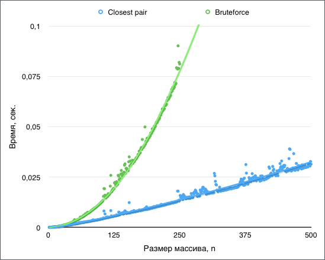

Динамическое программирование
Материалы: лекция 30.01, 03.02
Лектор: Объедков Сергей Александрович
Семинарист: Макаров Илья Андреевич
Конспектировал Гончаров Владимир
import random
import tests
from operator import itemgetterНа вход подается массив координат точек. Найти две ближайшие.
Случай, когда точки заданы одной координатой прост: сортируем и проходимся по всем точкам, рассматривая соседей. На все про все \(O(n\log n) \).
Случай на плоскости уже интереснее. Для его решения поступим следующим образом.
Первым делом отсортируем наш массив по координате \(x \) и \(y \) (На выходе получим два отсортированных массива; Время — \(O(n\log n) \)). Теперь мы запустим рекурсивную функцию, которая-то и вернет нам две ближайшие точки.
В рекурсивной функции мы разделим массив точек на две части относительно медианы (за \(O(n) \)) и рекурсивно найдем в каждой из частей две ближайшие точки. Назовем кратчайшее расстояние, известное на данный момент, \(\delta \).
Осталось проверить, нету ли таких точек, которые лежат в разных половинах, и расстояние между ними короче, чем \(\delta \). Для этого рассмотрим любую точку и заметим вот что: если есть точка, расстояние до которой меньше, чем \(\delta \), она непременно должна лежать в прямоугольнике со сторонами \(\delta \) на \(2\delta \):
Но в таком прямоугольнике может уместиться не более шести точек, иначе расстояние между ними станет меньше \(\delta \) и возникнет противоречие.
Тогда достаточно для каждой точки рассмотреть 6 следующих ее соседей в отсортированном по \(y \) массиве.
Несложно убедиться, что время работы алгоритма \(T_{rec}[n] = 2T_{rec}[n / 2] + O(n) = O(n\log n) \), \(T[n] = O(n\log n) + T_{rec}[n] = O(n\log n) \)
Сравнение с обычным алгоритмом (T[n]):

def distance_2(a, b):
# Квадрат расстояния между точками
return (a[0] - b[0]) ** 2 + (a[1] - b[1]) ** 2
def closest_pair_bruteforce(points):
# Алгоритм, работающий за O(n^2).
# Нужен для выхода из рекурсии и для проверки
assert len(points) >= 2
min_dist = distance_2(points[0], points[1])
min_points = (points[0], points[1])
for point1 in points:
for point2 in points:
if point1 != point2 and distance_2(point1, point2) < min_dist:
min_dist = distance_2(point1, point2)
min_points = (point1, point2)
return min_points
def closest_pair(points):
# points = [(x1, y1), (x2, y2), ...]
assert len(points) >= 2
points_x = sorted(points, key=itemgetter(0))
points_y = sorted(points_x, key=itemgetter(1))
def closest_pair_recursive(points_x, points_y):
if len(points_x) <= 3:
return closest_pair_bruteforce(points_x)
else:
mid = len(points_x) // 2
points_x_l, points_x_r = points_x[:mid], points_x[mid:]
points_y_l, points_y_r = [], []
for point in points_y:
if point[0] <= points_x_l[-1][0]:
points_y_l.append(point)
else:
points_y_r.append(point)
l0, l1 = closest_pair_recursive(points_x_l, points_y_l)
r0, r1 = closest_pair_recursive(points_x_r, points_y_r)
d1, d2 = distance_2(l0, l1), distance_2(r0, r1)
if d1 < d2:
min_dist = d1
min_points = l0, l1
else:
min_dist = d2
min_points = r0, r1
for i in range(len(points_y) - 1):
for j in range(i + 1, min(i + 7, len(points_y))):
if distance_2(points_y[i], points_y[j]) < min_dist:
min_dist = distance_2(points_y[i], points_y[j])
min_points = points_y[i], points_y[j]
return min_points
return closest_pair_recursive(points_x, points_y)
if __name__ == '__main__':
def generate_points(n):
points = []
for j in range(n):
x, y = random.randint(-100 * n, 100 * n), random.randint(-100 * n, 100 * n)
while (x, y) in points:
x = random.randint(-100 * n, 100 * n)
y = random.randint(-100 * n, 100 * n)
points.append((x, y))
return points
for i in range(100):
points = generate_points(100)
p1 = closest_pair(points)
p2 = closest_pair_bruteforce(points)
try:
assert distance_2(*p1) == distance_2(*p2)
except AssertionError:
print('Output:', distance_2(*p1), p1)
print('Expected:', distance_2(*p2), p2)
print('Input:', points)
print('ERROR! Closest pair is incorrect!')
functions = [
['Closest pair', closest_pair, None],
['Bruteforce', closest_pair_bruteforce, lambda n: n > 250],
]
test_preparer = lambda n: [generate_points(n)]
tests.timetest(functions,
range_set=([(n, test_preparer)
for n in range(2, 501, 1)],
),
time_to_repeat=10,
output='csv')Задача состоит в следующем: пусть у нас есть набор отрезков. Для понятности скажем, что мы управляем рестораном. Каждый отрезок — это заказ зала. У отрезка есть время начала, окончания, и «вес», сколько денег мы получим, если удовлетворим заказ. Ах, да, два заказа в одно время подтвердить нельзя.
Пример:
1: [---15---]
2: [-----10-----]
3: [---1---]
4: [-2-]
5: [--4--]
Нельзя одновременно принять заказы 1 и 2, 2 и 3, 2 и 4, 3 и 4.
Для максимального профита нужно принять зкакзы 1, 4 и 5,
и получить 21 фантик.
Решается оно по индукции. Пусть отрезок задан структурой [begin, end, weight].
Для начала отсортируем наши отрезки по времени оеончания end.
Теперь применим динамику: на \(i \)-м шаге мы будем вычислять
максимальный профит, который мы получим при рассмотрении первых \(i \)
элементов массива. При этом возможны такие варианты: либо на \(i \)-м шаге
мы не включаем \(i \)-й отрезок, и оставляем все как есть, то есть
используем результат \(i-1 \)-го шага, либо мы включаем \(i \)-й
отрезок, но выкидываем из решения те отрезки, которые с ним пересекаются.
Пример: на 3 шаге мы считаем, что оптимально взять отрезки 1 и 3.
Тогда на 4 шаге мы смотрим, что лучше: оставить 1 и 3, получив прибыль 16,
или добавить отрезок 4, исключив при этом из решения все,
что с ним пересекается, получив прибыль 17.
Несложно заметить, что мы применяем сортировку за \(O(n\log n)\), после чего на кажодм из \(n \) шагов выполняем \(O(\log n) \) операций, получая итоговую сложность \(O(n\log n) \).
def find_optimal_schedule(segments):
segments.sort(key=itemgetter(1))
for i in range(1, len(segments)):
j, hi = 0, i + 1
while j < hi:
mid = (hi + j) // 2
if segments[mid][1] > segments[i][0]:
hi = mid
else:
j = mid + 1
j -= 1
if j < 0 or j >= i:
segments[i][2] = max(segments[i][2],
segments[i - 1][2])
else:
segments[i][2] = max(segments[i][2] + segments[j][2],
segments[i - 1][2])